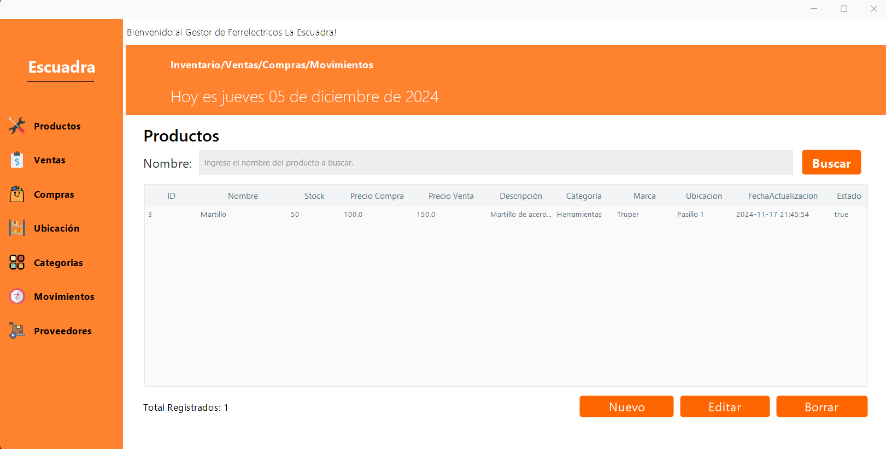

Junior | Backend Software Developer
Soy estudiante de Ingeniería de Software en búsqueda de prácticas profesionales. Tengo conocimientos en Python, Java, C#, JavaScript y bases de datos relacionales como MySQL, utilizando JDBC. He desarrollado proyectos de backend y frontend aplicando POO, implementando patrones de diseño como DAO y Singleton, y siguiendo buenas prácticas de desarrollo como clean code. Manejo Git, Testing y metodologías ágiles como Scrum. Me destaco por mi creatividad, capacidad de trabajo en equipo y habilidad para resolver problemas bajo presión.
Sistema de gestión para ferreterías desarrollado en Java con interfaz gráfica en JFrame y base de datos MySQL. Permite administrar usuarios, productos, proveedores, categorías, marcas, compras y ventas. Requiere NetBeans, XAMPP y el conector JDBC. Incluye archivo SQL para crear la base de datos e instrucciones de configuración detalladas.
